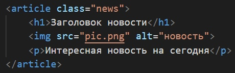

Структурирование контента в HTML: как не перепутать <div>,
<section>,
<article>
и <aside>?
Ещё одна причина любить и уважать HTML5 — его громадный вклад в семантику кода. То есть, код теперь имеет осмысленную и логичную структуру. Для этого введены специальные теги, которые служат удобным инструментом создания понятной и легко читаемой структуры в коде.
Среди прочих стоит выделить теги <section>, <article> и <aside>.
Именно они делают блок с контентом более значимым и обособленным, чем привычный <div>.
Часто не до конца ясно, когда использовать эти новые элементы, а когда обычный <div>.
Что ж, давайте начнём с обзора упомянутых элементов, а затем уже поговорим об их применении и комбинировании.
Обзор элементов
<div>-
Элемент
<div>является, пожалуй, самым универсальным блочным элементом. При этом у него нет полноценного самостоятельного значения — он предназначен для группировки контента, который семантически никак не связан между собой. Использовать<div>нужно осторожно — он не имеет смысла для скрин ридеров.Настоятельно рекомендуем обращаться к элементу
<div>только в крайнем случае, когда больше никакие другие элементы не подходят!Элемент <div>чаще всего используется как контейнер для других элементов
<section>-
В отличие от
<div>, тег<section>применяется к общим разделам контента, который может быть сгруппирован семантически.Главное правило: элемент
<section>уместно использовать только тогда, когда его содержимое явно указывается в структуре. Например, в качестве раздела.В силу того, что содержимое тега <section>имеет семантическую общность — «тему» — её необходимо указать с помощью заголовка. Часто «тема» указывается сразу после открытия тега:
<article>-
Тег
<article>ещё более уточняющий и конкретный, чем тег<section>. Он так же применяется к семантически связанному блоку контента и должен иметь заголовок. Его содержимое должно быть независимым и самодостаточным — это, своего рода, отдельная статья. При изолировании содержимого тега<article>от остальной части страницы должны сохраняться его смысл и законченность.Чаще всего тег <article>применяется к статье на сайте, отдельной новости, посту блога, сообщению форума или комментариям: <aside>-
Тег
<aside>тоже применяется к блоку для семантического указания раздела. Но у него есть важное отличие от<section>или<article>: он представляет блок контента, отношение которого к содержимому документа косвенное или вообще отсутствует. Тег<aside>независим (буквально, в стороне) от остального контента. То есть, он может быть вырван из одной страницы и вставлен в другую и при этом не потеряет свою актуальность.Чаще всего <aside>применяется для боковых панелей, блоков с рекламными баннерами, сносок и другой информации, которая отделена от основного содержимого страницы:
Применение <div>, <section>, <article>
и <aside>
Принимая во внимание особенности элементов, которые мы рассмотрели выше, получаем простой алгоритм для определения нужного тега в каждой ситуации:
-
если контент не является семантически связанным — используется
<div>. -
если контент семантически связан и относительно независим
от остального содержимого страницы — используется
<article>. -
если контент связан с содержимым всей страницы — используется
<section>. -
тег
<aside>, как было замечено выше, используется для обособления контента, который связан по смыслу между собой, но при этом не связан (слабо связан) с остальным содержимым страницы.

Комбинирование элементов
Теперь рассмотрим ключевые особенности объединения этих элементов вместе.
<article>в<article>-
Элементы
<article>можно вкладывать друг в друга. При этом они по-прежнему остаются самодостаточными. Предполагается, однако, что содержимое внутреннего<article>связано с содержимым внешнего.Например, если в посте блога содержится цитата из другого поста — она может быть «обёрнута» в свой <article>:
<article>в<section>-
Подобным образом несколько тегов
<article>можно «обернуть» в<section>.Например, так можно поступить на странице блога, где отображаются последние сообщения. Контейнером для всех постов будет тег <section>, а каждый такой пост обособляется тегом<article>:
<section>в<article>-
Возможен и обратный вариант, когда каждый тег
<article>может иметь один или даже несколько тегов<section>.Например, эта статья, если была бы частью страницы, могла бы быть размечена так: 
Вот и всё! Надеемся, эта статья поможет вам безошибочно определять правильное место для каждого структурирующего тега в HTML5.